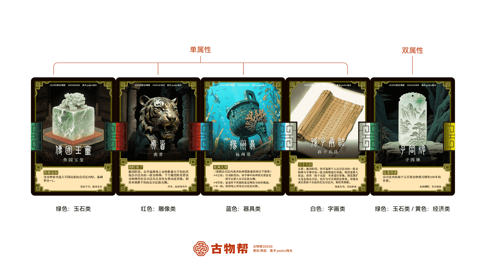
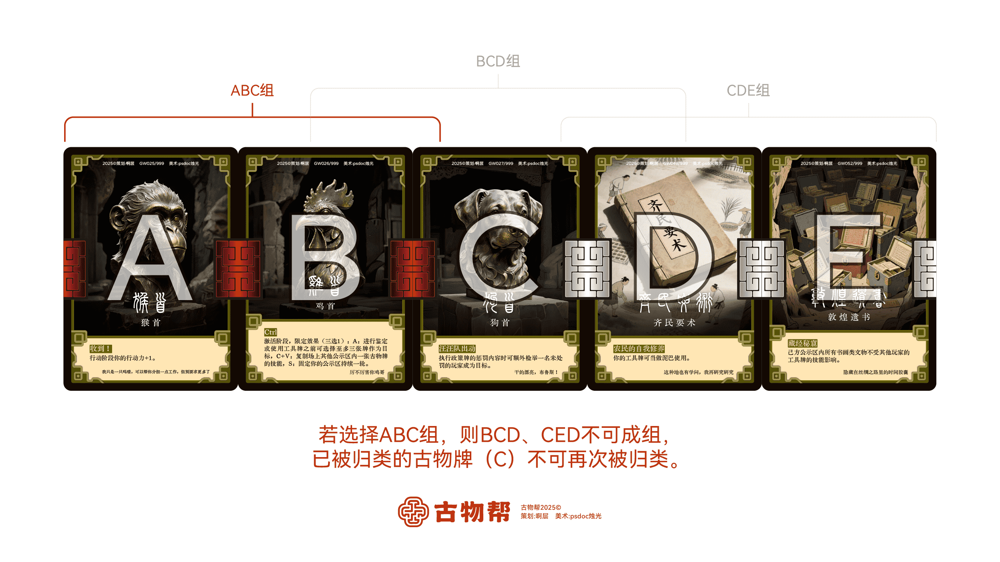

游戏背景
古物帮的帮主经常为博物馆找寻并捐献流失在外头的古物，如今帮主即将退休卸任，下一任的帮主将在你们当中产生。
帮主：各位优秀的古物帮成员，或许你们之前从事各行各业，而如今我希望你们能通过各自擅长的能力去找回流失在外界的众多古物。最终我会将帮主之位继承给其中最优秀的那位！
每一个进入公示区内的古物在游戏结束后都会捐赠给博物馆，而博物馆将会根据古物的能力和排列顺序计算你的最终得分。
卡牌构成
- 职业牌：15张
- 先行令：1张
- 鉴定牌：10张
- 稽查牌：10张
- 古物牌：83张
- 工具牌-辅助：50张
- 工具牌-技能：57张
- 点击右侧图片可查看卡牌介绍
点击查看大图


游戏初期设置
- 将所有古物牌与工具牌洗混后大致平分为两叠牌，一叠作为市场牌，另一叠为古墓牌。
- 将先行令与场上玩家数量-1张职业牌洗混后供玩家抽取。抽到先行令的作为本局的首位玩家，然后该玩家再从剩余职业牌中抽取一张本局游戏使用的职业牌。例如：有4名玩家，则抽取先行令和3张职业牌。
- 政策牌和鉴定牌洗混后无需操作，放置一旁。
点击查看大图

游戏流程
先由首位玩家开始第一个玩家回合，在玩家回合内根据以下步骤依次进行：
- 排序阶段：调整公示区内古物牌的顺序。
- 激活阶段：从左至右依次触发本轮古物技能。
-
行动阶段以下选项可供选择：
- 消耗1行动力：进入市场
- 消耗1行动力：进入鉴定机构
- 消耗3行动力：进入古墓
- 打出技能牌并消耗对应的行动力
- 消耗3行动力：跳过（结束行动阶段，下轮行动力+1）
- 政策阶段：所有玩家回合结束后，翻开并执行本轮政策牌（若无则跳过）。
- 拍卖阶段：结算政策牌后，将拍卖行内的牌依次拍卖直至清空。
- 检查阶段：若公示区古物牌数量大于7，则下轮开始时抽取一张政策牌。
- 新一轮：进入下一轮，流程重复。
游戏特色
- 探秘古墓：消耗一定的行动点数，以此进入古墓获取真品古物。
- 市场淘宝：市场中会有源源不断的机会获得古物，但其中不乏赝品；需要鉴定后方知真伪。
- 鉴定古物：进入鉴定机构并将手中的古物牌鉴定成功后就可以使用它们独特的能力了。
- 收集、组合、排序：通过收集不同的古物，来解锁搭配不同的技能，若使同类型古物排列得当，则会更轻易获得胜利，你能否找寻出当下古物排列组合的最优解呢？
- 秘密的奖惩：当游戏满足条件后，玩家们会抽取一张谁都不知道内容的"政策牌"，并于最后结算它的奖惩措施。
- 丰富的随机性：游戏的任何一步都充满着未知，来一丁点运气没准能扭转乾坤。
游戏结束条件
正常结束条件
游戏将会在一名玩家的公示区内首次集齐9件古物后进入倒计时，在下一轮结束后的同时游戏结束，进行总积分结算。（在游戏过程中努力争夺最高分获取胜利吧！）
其他结束条件
- 完成特殊鉴定牌任务-⭐鉴定牌【馆长的亲自鉴定】：该鉴定牌鉴定成功古物后，馆长会将其列为镇馆之宝，则立即获胜。
- 触发古物牌技能：玉云龙纹炉-该古物在场上存在三轮后游戏结束。
- 触发工具牌效果：提前交卷-游戏立即进入倒计时，下一轮结束后即为游戏结束。
- 终幕：闭市，封锁-古墓和市场同时处于无牌状态后游戏立即结束。
古物牌种类
常见类别
- 【绿色】：玉石类
- 【红色】：雕像类
- 【蓝色】：器具类
- 【白色】：字画类
- 【黄色】：经济类
点击查看大图

隐藏类别
- 【附带价值】：货币类（不在五大基础类别中，古物附带价值即拥有此类别）
积分结算规则
- 公示区内的每张古物牌的基础积分为1。
- 计算时先基础分，再组别分，最后技能分。
- 若有连续三张古物牌类别形成拼接，则归为一组，每组积分+1。
- 已被归类的古物牌不可再次被归类。
- 积分结算时应当从左至右依次结算每一个古物，而非同时计算。
- 本轮技能失效的古物在积分结算中无法使用该技能。
- 任何在积分结算时打出的工具牌必须要在分数结算完成前使用，不可在结算后打出，一旦结算完成且所有玩家无异议，便认定为该公示区的最终分数。
-
归类拼组举例：
其中 ABC 相连处为同一类别，形成拼接，所以可归类为一组；BCD、CDE虽然也形成拼接，但C已被归类，在ABC组内，所以不可成组。
-
点击查看大图 
-
积分结算举例：
从左至右依次加减乘除每一个古物，结算时先基础分，再组别分，最后技能分。
图一：有古物【剪刀】，触发剪刀技能，因为从左到右结算，所以剪刀前的古物（包括剪刀自己）的分数*2。
图一：有古物【八卦镜】，触发八卦镜技能，所有古物基础分+1。
-
点击查看大图 

游戏内名词解释
- 回合：每位玩家的单人行动为一回合。
- 轮：所有玩家的个人回合阶段与政策/拍卖等公共阶段的总和。
- 正置：将卡牌正面放置。（文字正向朝自己）
- 倒置：将卡牌倒转放置。（文字反向朝自己）
- 置入状态：即正置与倒置两种情况。
- 翻面：将卡牌背朝上放置。
- 使用：触发卡牌技能效果，然后置入回收站。
- 鉴定：向所有玩家展示需要鉴定的古物，然后抽取两张鉴定牌并对照翻开的鉴定牌词条，该过程中可使用工具牌或其他古物效果协助以满足词条条件，若词条均满足则鉴定成功，将展示的古物牌正置于公示区；反之无事发生。
- 限定效果：古物技能的附带效果，使用此技能效果后，失去此技能，直到该古物重新进入公示区后恢复。
- 固定：古物牌无法离开带有固定效果的公示区。
区域说明
公共区域
-
【市场】（牌堆1）：
- 每回合只可进入一次
- 进入市场后，单独观看牌堆顶上的三张牌，然后选择一张收入手牌，其余牌置入回收站
- 一轮过程中，市场无牌后不立即补充，而是在下一轮开始时将回收站洗牌转入市场
-
【古墓】（牌堆2）：
- 每回合只可进入一次
- 需要消耗3行动点数可进入古墓
- 进入古墓后，翻开古墓牌堆顶上的两张牌并选择一张牌，根据选择结果，若为：古物牌-立即倒置于公示区最右侧，不为古物牌-收入手牌；其余的牌均置入回收站。
- 进入古墓后若同时获得多张古物牌，则玩家自定先后顺序置入公示区。
- 若本轮没有人进入古墓，则将古墓顶上的一张牌翻开并置入回收站
- 该区域无法通过任何手段增加牌堆数量，用完即止。
-
【回收站】（弃牌堆）：
- 所有使用过的工具牌及被弃置的牌都需要置入回收站
- 当市场无牌后，下一轮开始时将回收站内的所有牌洗牌后重新转入市场。
-
【鉴定机构】：（使古物卡激活技能并置入公示区）
- 从手牌中展示一张古物牌，并抽取一张鉴定牌，展示的古物牌需满足鉴定牌上的所有词条方为鉴定成功；否则无事发生。
- 鉴定成功后的古物牌需立即置入公示区的最右侧
-
【政策卡】：（随机的奖惩结算）
- 本轮结束时若有玩家的公示区内古物牌数量>6，则下一轮开始前抽取一张政策牌，背面朝上置于一旁
- 本轮最后一名玩家回合结束后，向所有玩家展示之前抽取的政策牌，并执行牌面上的奖惩内容
- 结算后所有政策牌洗混归置一旁
-
【拍卖行】（货币交易区域）
- 在拍卖行内的所有牌统一在拍卖阶段拍卖。
- 由本轮末位玩家开始首位玩家结束的顺序依次出价，出价最高者成交。
- 竞拍出价时必须比上一位玩家的价值更高，相同价格不能出价。
- 拍卖时需依次对每一张卡牌单独进行竞拍，直到所有牌成交或流拍
- 若成交为古物卡，将其正置入公示区最右侧；若不为古物卡，则收入手牌。
- 若有卡牌未成交导致流拍，则转入回收站
玩家个人区域
-
【公示区】：（最终积分结算区域）
- 位于玩家面前的区域，玩家需将收集到的古物卡按条件放置于公示区内才可获得相应积分并取得胜利。
- 手牌中的古物卡需进行鉴定后方可置入公示区
- 置入公示区内的古物可以在激活阶段以从左至右的顺序依次生效/使用其卡面技能效果
- 注：古物被动效果可同时生效，但结算顺序仍为从左至右（即公示区内12345排列的古物中，1使数值加一，2使得数值翻倍，应当先加一后翻倍）
- 本轮位次发生变动的古物技能效果失效（需将失效古物翻过来，卡背朝上作为标记，于下轮开始时所有玩家统一翻回来）。
- 例A：12345排列的古物中，1移动至5右侧，转变为23451，导致所有古物位置发生变动，所以12345古物均失效一轮。
- 例B：12345排列的古物中，1与5对调位置。转变为52341，其中234位置没有发生变动，所以仍可生效，而15变动位置所以失效一轮）
-
【手牌区】：（个人基础存储区域）
- 每位玩家在个人回合结束后，留存至多6张手牌
- 以任何方式进入手牌区内的古物卡，其鉴定状态均转变为'未鉴定'状态
常见问题与解答
-
Q：如果我进入市场或古墓摸牌后导致该区域无牌，从而触发终幕，我还能进行后续行动吗？
A：不行，一旦触发终幕则游戏立即结束，停止一切行动，这被视为最高优先级。 -
Q：如何区分古物牌的类别呢？
A：在古物牌的牌面两侧，玩家们可以明显的观察到有[左右相同]或[左右不同]的颜色标识；例如【扬州鼎】，左右都是相同的蓝色，所以扬州鼎只包含一种器具类别。而【子冈牌】左右则是绿色和黄色，标识它同时拥有玉石类和经济类两种类别的古物。而货币类别则不在五大基础类别当中，只要古物附带价值，那么它就会拥有货币类别。 -
Q：不同类别的古物会有什么效果吗，为什么要区分类别？
A：古物的类别会影响到最终积分的结束，在游戏中合适恰当的排列古物，让三张彼此间相同类别的古物凑成一组可以获得额外积分！ -
Q：怎么查看所展示的古物牌是否满足鉴定牌上所需求的存世年限，水渍，裂隙，划痕等词条。
A：任何一张古物牌都是"零词条"，玩家们需要通过泥巴，脏水，榔头，刻刀等一些其他卡牌或技能增加所要鉴定古物的词条。 -
Q：如果我的上家回合内把市场摸空了，导致我⽆法进⼊市场了怎么办？
A：很抱歉，市场牌堆的补牌机制在新的⼀轮开始时，如果此时在你的回合中还未进⼊下⼀轮，那么你可以尝试其他的⾏动步骤。 -
Q：货币类别的古物要怎么凑成一组呢？
A：与其他五种类别不同，货币类仅作为一种称呼，任何附带价值的古物都属于货币类，且货币类并不能与五种基础类别形成拼接，也不受任何技能影响，它更像是一种可有可无的"俗称"。